<ion-content padding>
<div class="logo">
  
</div>

<ion-item style="background-color: #065fa800; border: solid; border-color: #065fa800"  >
    <ion-input style="background-color: #065fa800; border: solid; border-color: #065fa800"   type="text" placeholder="DIGITE SEU E-MAIL" [(ngModel)]="userData.email" ></ion-input>
  </ion-item>
  <br>
  <ion-item  style="background-color: #065fa800; border: solid; border-color: #065fa800"   >
    <ion-input style="background-color: #065fa800; border: solid; border-color: #065fa800"    [type]="tipo ? 'text' : 'password'" placeholder="DIGITE SUA SENHA" [(ngModel)]="userData.senha"  ></ion-input>
        <ion-icon color="light"  (click)="exibirOuOcultar()"  
        item-right  style="font-size: 30px" [name]="tipo ? 'eye-off' : 'eye'"></ion-icon>
  </ion-item>
  
  <p style="padding: 40px;" >

  </p>


</ion-content>

<ion-footer text-center color="danger" no-border>
  <ion-toolbar color="danger">
      <button color="light"  (click)="login()" ion-button outline style="  width: 70%; border-radius: 10px; color:#ffffff; height: 30px; font-family: sans-serif; font-size:17px;" >FAZER O LOGIN</button>
      <br><br>
      <a color="dark"  (click)="login()"   style="  width: 70%;  color:#ffffff; height: 30px; font-family: sans-serif; font-size:17px; ">CADASTRA</a>
  </ion-toolbar>
  <br><br>
</ion-footer>